Piloter avec des faits
Des KPI partagés remplacent les impressions : toutes les équipes s’appuient sur la même réalité.
Data & IA Engineer · disponible pour de nouveaux défis
4 ans d’expérience en analyse de données, BI et IA, après 2 ans en Software Engineering. Je conçois des solutions qui offrent aux équipes métier une lecture claire de leur activité et des leviers d’action concrets.
Appels, CRM, fichiers, outils métier : la donnée est partout dans l’entreprise. Mon rôle est de la rendre fiable, lisible et utile à la décision.
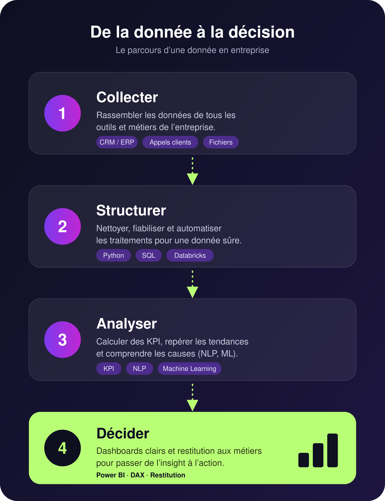
Des KPI partagés remplacent les impressions : toutes les équipes s’appuient sur la même réalité.
L’automatisation des traitements récurrents libère du temps pour l’analyse et l’action.
le machine learning fait émerger les irritants et les tendances enfouis dans le texte.
Ma façon de mener un projet data de bout en bout, du cadrage jusqu’à la restitution des résultats.
01 / 06
Livrable :
Expérience · UGIPS Gestion (AXA)
Plus de 10 000 retours clients, issus d’appels retranscrits, transformés en indicateurs qui orientent les actions managériales.
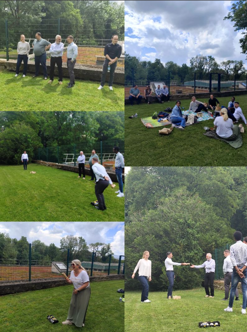
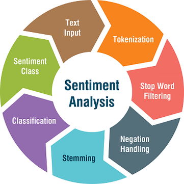
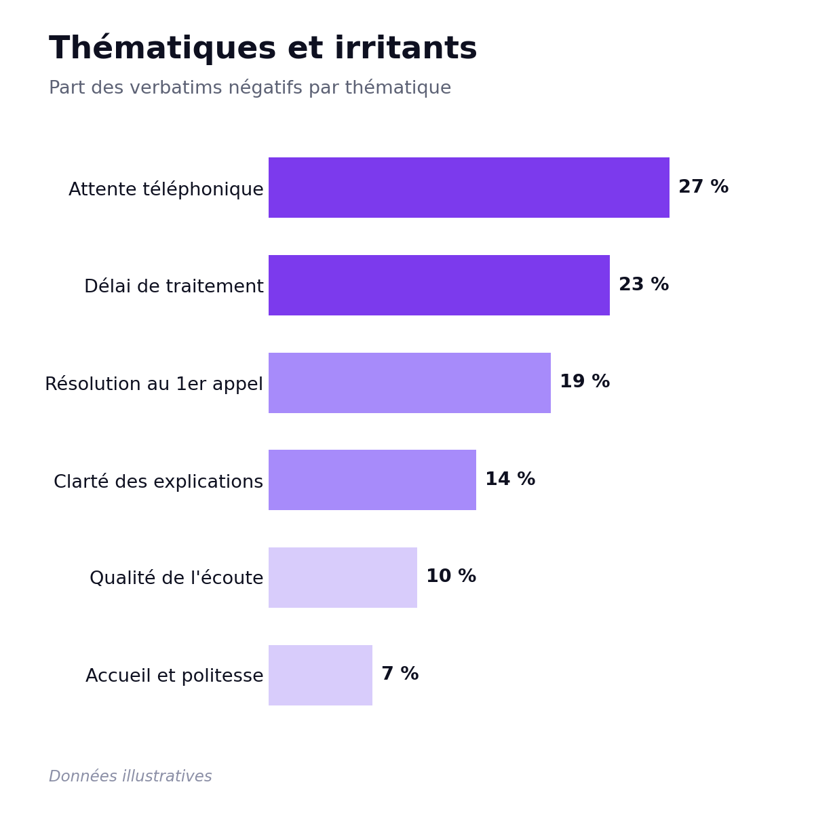
Data & IA Project
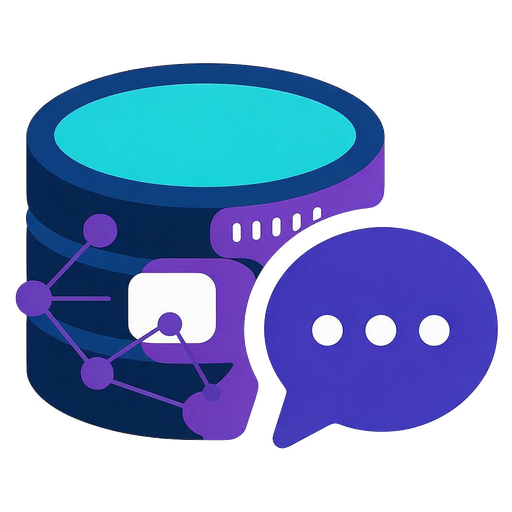
Un assistant conversationnel qui traduit une question métier en requête SQL, l’exécute en lecture seule et restitue les résultats sous forme de tableaux et de graphiques.
Vidéo à ajouter :assets/assistant-data-ai-demo.mp4
Application en ligne · démo vidéo
Projet personnel · BI et Machine Learning
Une plateforme décisionnelle qui transforme les données de ventes en indicateurs fiables et en prévisions exploitables : base SQL, contrôles qualité, dashboard interactif et modèle de prévision.
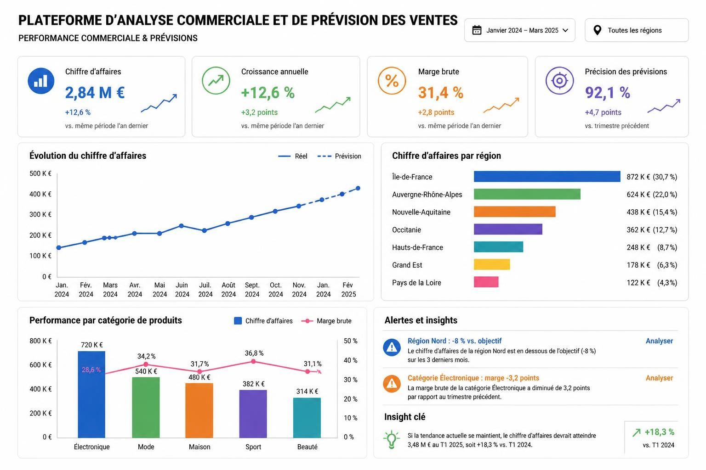
Dashboard de démonstration · données illustratives
Projet personnel · Data Quality et IA

DataSentinel AI aide les entreprises à détecter, comprendre et corriger leurs problèmes de qualité des données : de l’anomalie au diagnostic, jusqu’à l’action.
Ouvrir l’applicationVidéo à ajouter :assets/Présentation DataSentinel_AI_2.mp4
Application en ligne · démo vidéo
Projet professionnel · Data Analytics et RH
Exploiter les données Salesforce et les données opérationnelles métier pour anticiper les besoins de recrutement et piloter plus finement les ressources humaines.
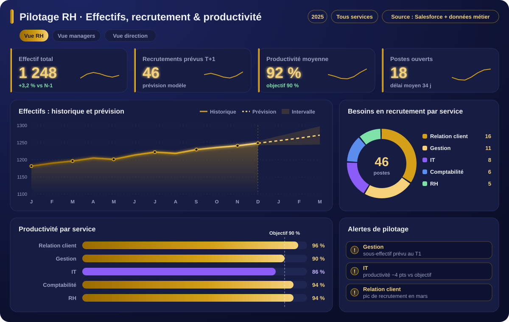
Illustration · données fictives
Une sélection de graphiques issus de mes analyses. Cliquez sur une image pour l’agrandir.
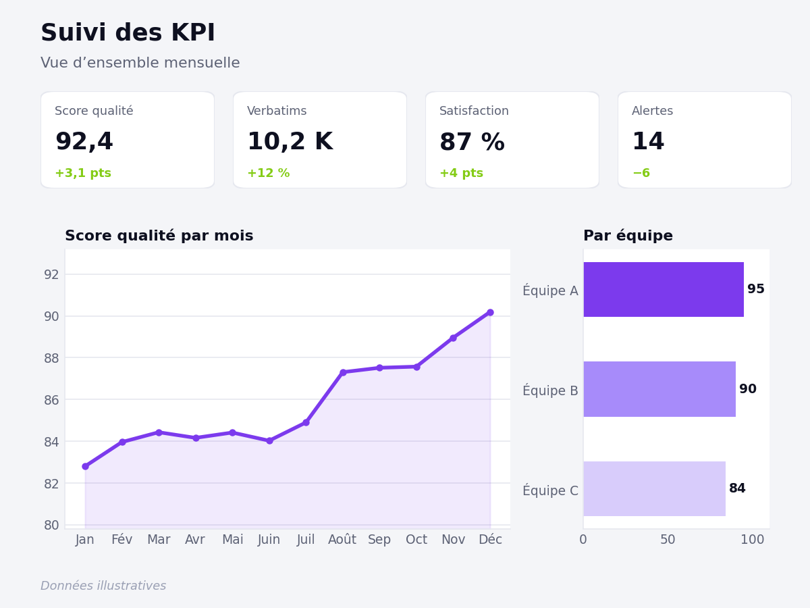
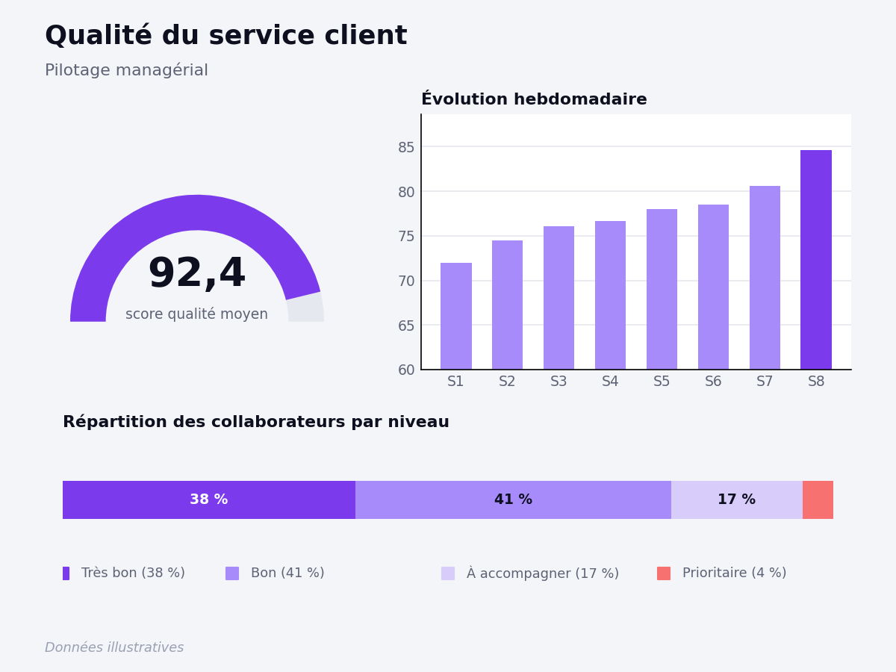
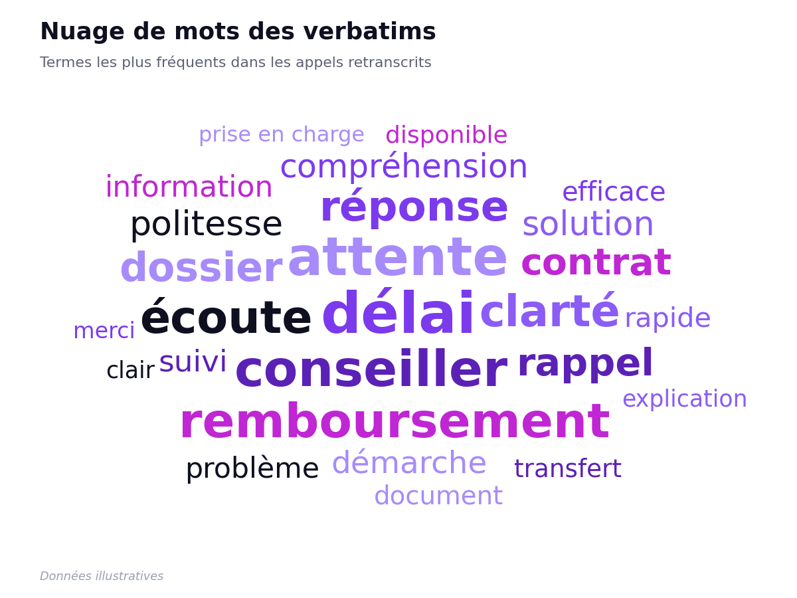
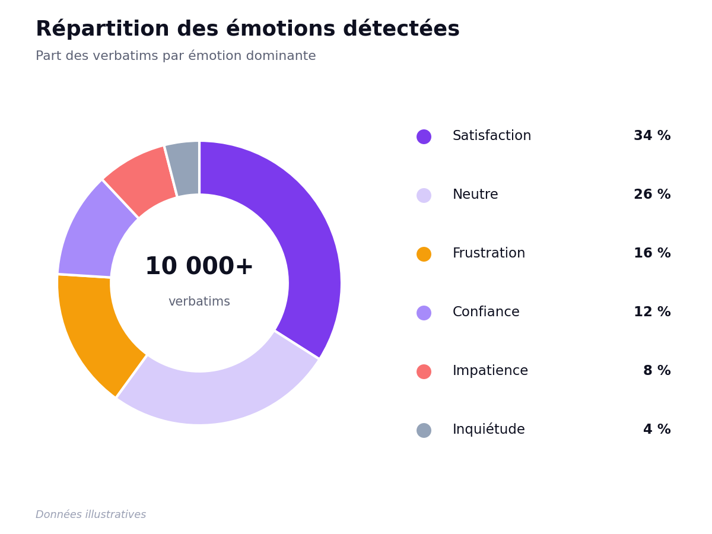
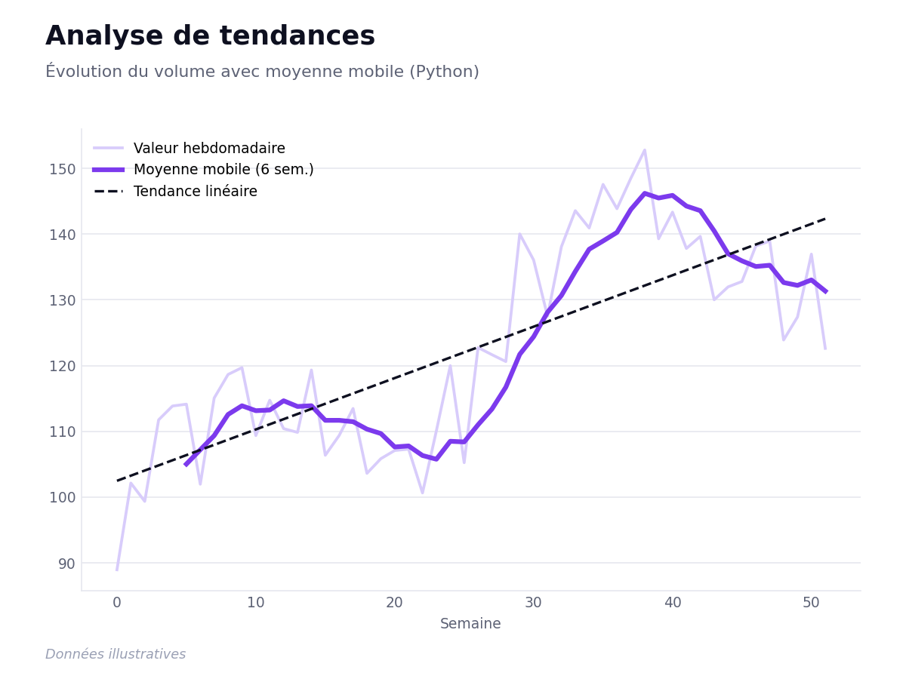
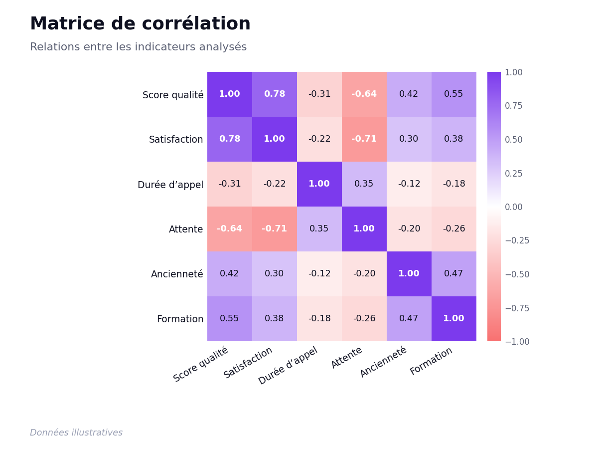
UGIPS GESTION · filiale AXA
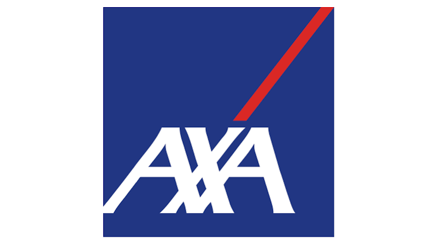
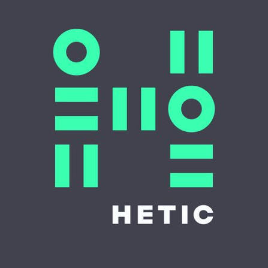
HETIC · Montreuil
Spécialisation en analyse de données et en intégration de l’IA dans les métiers de la data.
J’allie expertise technique et sens du métier pour transformer les résultats data en décisions compréhensibles par tous.
 Python
Python SQL
SQL Pandas
Pandas NumPy
NumPy Databricks
Databricks Snowflake
Snowflake Power BI
Power BI Qlik Sense
Qlik Sense Matplotlib
Matplotlib TensorFlow
TensorFlow Scikit-learn
Scikit-learn Gradio
Gradio Streamlit
Streamlit Render
Render Git
Git GitHub
GitHubVous recherchez un profil Data & IA capable de relier technologie, analyse et enjeux métier ? Parlons-en.